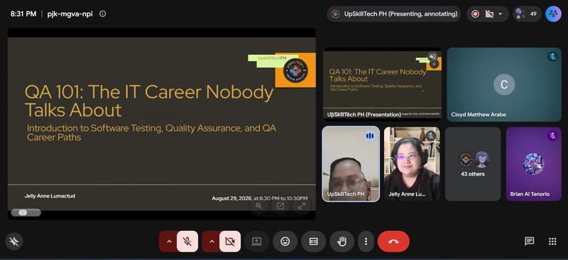
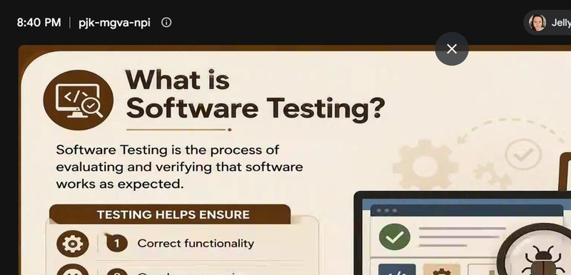
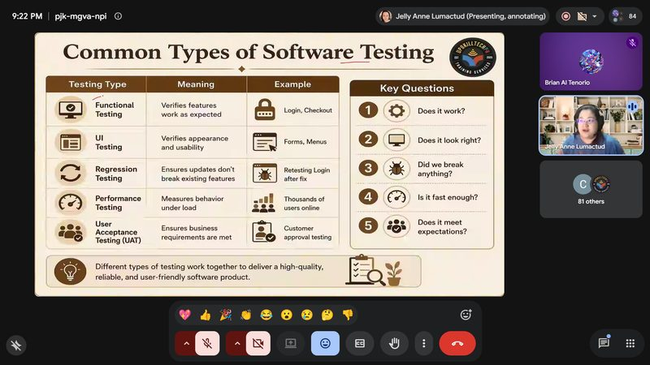
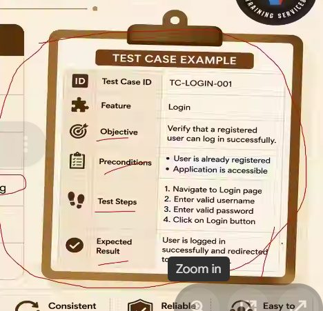
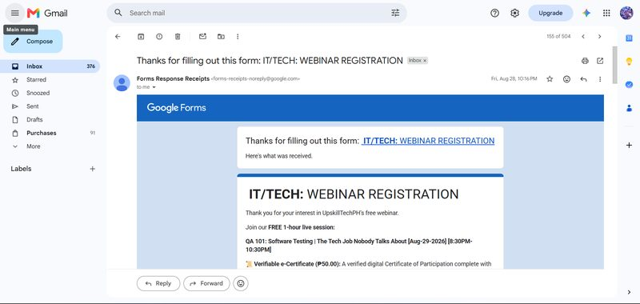

QA 101: Software Testing | The Tech Job Nobody Talks About
A two-hour UpskillTechPH webinar introducing software testing, quality assurance and QA as a career path.
- Date
- August 29, 2026
- Time
- 8:30 – 10:30 PM
- Duration
- 2 hours
- Speaker
- Jelly Anne Lumactud, CGAIP
- Organizer
- UpskillTechPH Training Services
- Platform
- Google Meet (online)
- Credential ID
- aa78b92c94fbdf87f2df2906d9a37a46
Certificate of participation

Narrative report
On August 29, 2026, I attended “QA 101: Software Testing | The Tech Job Nobody Talks About,” a two-hour webinar by UpskillTechPH Training Services on Google Meet from 8:30 to 10:30 PM. I registered the night before through the organizer’s form. UpskillTechPH founder Mr. Alexander Lopez opened the session, and resource speaker Ms. Jelly Anne Lumactud, CGAIP, introduced software testing, quality assurance and QA career paths to more than eighty participants.
She defined software testing as the process of evaluating and verifying that software works as expected, then walked through the common types: functional testing for features, UI testing for appearance and usability, regression testing to make sure updates don’t break what already works, performance testing under load, and user acceptance testing against business requirements. Later in the session she showed how to write a proper test case, using a login example with an ID, objective, preconditions, steps and expected result.
Different types of testing work together to deliver a high-quality, reliable, and user-friendly software product.
Testing connects directly to system administration. After a patch or update, a written regression checklist covering logins, network shares, printing and backups confirms that nothing broke, and a few end users can try the change before a full rollout. It is also a core step in DevOps, where every change is checked before it reaches users.
Photo documentation








Proof of registration

